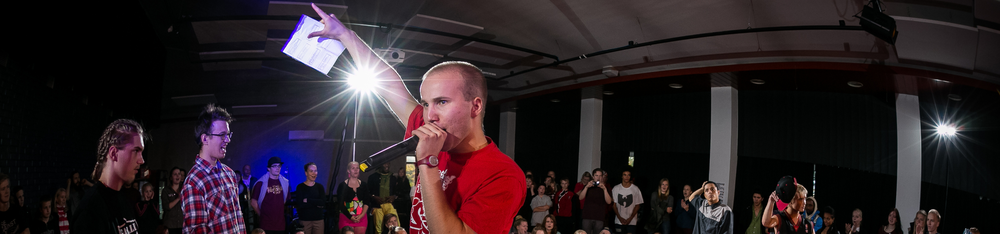

ISKY ry on katutanssikulttuurille omistautunut yhdistys Itä-Suomessa. Tarkoituksenamme on tuoda esille, tukea ja kehittää katutanssikulttuuria sekä katutanssien harrastamista Joensuun alueella.
ISKY järjestää tanssiworkshoppeja sekä tanssiin liittyvää tiedotusta ja koulutusta. Järjestämme myös tanssitreenejä, jameja, kilpailuja, esityksiä ja muita vastaavia tapahtumia. Lisäksi osallistumme erilaisiin järjestö-, kaupunki- ja tanssitapahtumiin.